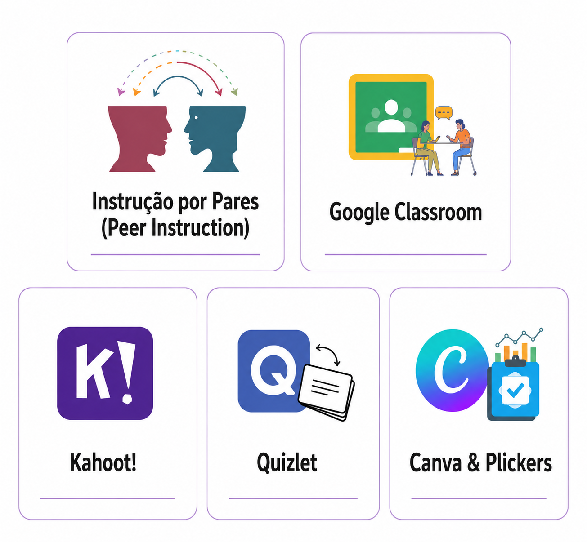
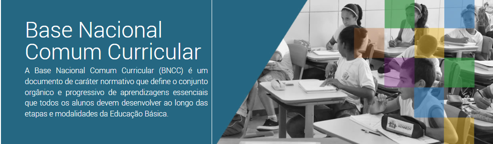

Clique em qualquer estação do caminho para abrir materiais de aprofundamento, artigos e vídeos explicativos!
(0:00-0:18) Oi! E aí galera, tudo bom com vocês? Sejam bem-vindos a mais um vídeo do canal! Meu nome é Rafael e hoje eu trouxe uma metodologia ativa maravilhosa para você que quer mudar um pouco sua perspectiva sobre o trabalho em grupo. (0:18-0:45) Quem já foi para a escola alguma vez com certeza já teve que fazer uma atividade em dupla ou em grupos. Geralmente o que acontece é: primeiro aquela fatídica pergunta se "pode fazer dupla de três", e depois que geralmente um aluno — o que estudou mais ou domina melhor o conteúdo — acaba carregando os seus colegas, que por sua vez fazem bem menos da atividade. Hoje eu vou mostrar um pouquinho sobre como a gente pode equilibrar melhor esse jogo. (0:45-0:57) É uma metodologia que foi criada em 1991 por um professor de física de Harvard chamado Eric Mazur. Ele é responsável pela chamada Aprendizagem por Pares. (0:57-1:32) Qualquer ideia da aprendizagem por pares, e por que ela se diferencia de uma simples atividade em dupla? A dinâmica funciona da seguinte maneira: você primeiro vai explicar um conteúdo e depois vai começar a testar o conhecimento da sua turma fazendo algumas perguntas. Aqui vai a dica: é legal fazer perguntas de múltipla escolha sobre o que foi falado na aula. Faz uma pergunta e questiona a turma: "Quem acha que é a letra A?" (os alunos levantam a mão), "Quem acha que é a letra B?" (outros alunos levantam a mão), e por aí vai. (1:32-1:49) A partir do momento que você tem as respostas da sua turma, você começa a analisar mais ou menos como foi o desempenho dela com a questão que você colocou. Se menos de 30% da sua turma acertou a questão (ou seja, quase ninguém sabia a resposta), é interessante você parar e revisar a matéria antes de continuar os exercícios. (1:49-2:03) Agora, se mais de 70% da turma acertou, provavelmente eles dominam esse conteúdo. Então é legal só dar a resposta e tirar as dúvidas de quem errou ou confundiu algum conceito. (2:04-2:48) Agora, no momento que você tem entre 30% e 70% da turma acertando (ou seja, a turma foi mais ou menos bem nessa questão), você começa a aplicar a Aprendizagem por Pares. Como que ela funciona? Você não vai divulgar o gabarito da questão quando essa situação acontecer, e vai convidar os alunos a se juntar em pares ou grupos — de preferência com pessoas que responderam de forma diferente das delas. Então, se eu respondi letra A, eu vou me juntar com alguém que respondeu B, C ou D. E aí os alunos vão ter um tempinho para discutir e defender as suas ideias sobre por que responderam aquela alternativa. (2:48-3:08) A intenção aqui é que, ao invés de ele só memorizar o gabarito da questão, ele de fato teste esse conhecimento se colocando num ambiente de argumentação (muito importante!). Ao argumentar e defender sua resposta, ele acaba testando se ele de fato entendeu esse conceito. (3:09-3:45) Depois que eles argumentarem, você vai fazer a mesma pergunta de novo e vai avaliar como vai ser a resposta dos alunos: se mudou a porcentagem de respostas corretas, se eles transicionaram para uma alternativa específica... Porque é a partir daí que você vai discutir os resultados para explicar qual é o gabarito e tirar as dúvidas do que pode ter levado a turma a se direcionar para uma alternativa específica, ou ter uma taxa de acerto maior depois de discutir. (3:45-4:12) Como eu disse, é uma metodologia implementada há mais de 20 anos, muito testada, e que é interessante justamente por mostrar que geralmente a turma melhora o seu índice de acerto no momento que eles discutem e debatem as ideias. Ela promove um espaço de aprendizagem em que esse conhecimento fica guardado por mais tempo, justamente porque é posto à prova no ambiente de argumentação. (4:12-4:44) Para o vídeo de hoje, a ideia era que vocês conhecessem essa metodologia e entendessem o seu passo a passo para poder utilizar em sala de aula. É lógico que você pode adaptar e mudar um pouquinho esse passo a passo para a dinâmica que você vive dentro de sala de aula. Se você gostou da dica e gostaria de saber mais sobre metodologias ativas, robótica e tecnologia para a educação, não deixe de curtir, comentar e se inscrever no nosso canal, que toda semana eu apareço aqui com novo conteúdo. Até mais!
(0:00-0:19) [Música] (0:19-0:41) Peer Instruction (Instrução pelos Pares) é um método de ensino e aprendizagem idealizado por Eric Mazur, um professor de cursos introdutórios de física na Universidade de Harvard. Dizemos que é um modelo centrado no aluno, onde a figura do professor é a de mediador em vez de autoridade, sendo responsável por selecionar, conduzir e retomar as atividades. (0:41-1:07) A origem deste método remonta ao ano de 1991, quando o professor Mazur analisou o resultado de um teste sobre conceitos em mecânica aplicado em alunos ingressantes. Ali ele percebeu que os alunos traziam muitas concepções fundamentais erradas e também que eram capazes de resolver questões numéricas complexas com mais sucesso que questões conceituais mais elementares. (1:07-1:43) O objetivo de Mazur era melhorar o entendimento dos alunos acerca de conceitos básicos, de maneira que o raciocínio crítico substituísse a memorização de algoritmos para resolver as questões. Ele propôs então uma aula com ampla participação dos alunos, inclusive antes da aula, implementando elementos característicos de outras técnicas, como por exemplo a leitura prévia de material (que vem da sala de aula invertida) e a proposição de perguntas de múltipla escolha inspirada na técnica Think-Pair-Share. (1:43-2:11) Esse método vem sendo aplicado em escolas e universidades ao redor do mundo, predominando no ensino superior. De maneira geral, a implementação do Peer Instruction ocorre mais frequentemente em cursos da área STEM (Tecnologia, Engenharia e Matemática), com destaque para o estudo de física. No entanto, há relatos do uso desse método em cursos de Direito e Filosofia, por exemplo. (2:11-2:25) Em relação ao ensino de física, os temas mais abordados incluem mecânica (com ênfase em leis de Newton e cinemática), eletromagnetismo e óptica, relacionados com disciplinas mais introdutórias do curso. (2:25-2:49) Nesse sentido, o Peer Instruction ajuda a desenvolver operações de pensamento, predominantemente: a obtenção e organização de dados; análise e interpretação das questões apresentadas em aula; aplicação de fatos e princípios a novas situações; busca de suposições; comparação dos resultados com os colegas; reelaboração crítica e, por fim, decisão. (2:49-3:14) Com relação à metodologia, a preparação anterior e posterior são tão fundamentais quanto a própria aula. Antes da aula, o docente pode instruir o estudo prévio de material, tais como livros didáticos, vídeos e textos. Nesta etapa, o professor geralmente aplica questionários para testar a interpretação e o entendimento dos estudantes acerca de um tema. (3:14-3:39) Durante a aula, são feitas breves apresentações do conteúdo (com cerca de 5 a 10 minutos pelo professor), seguidas por uma questão conceitual. É solicitado que os estudantes respondam individualmente ao exercício (entre 1 e 5 minutos), e as respostas podem ser computadas por pequenos controles, cartões de respostas ou aplicativos de celular (por exemplo, Kahoot), geralmente de forma anônima. (3:40-3:50) Caso o percentual de acerto seja igual ou maior que 70%, o docente pode apresentar a resposta correta e seguir para o próximo tópico da aula. (3:50-4:00) Se o percentual de acerto for inferior a 30%, então o professor poderá voltar à etapa anterior e reapresentar o tópico. (4:01-4:29) Contudo, se o percentual de acerto estiver entre 30% e 70%, os alunos são orientados a discutir as respostas em pequenos grupos (em cerca de 5 a 10 minutos), e em geral o professor acompanha as discussões grupo a grupo. Ao final, os alunos devem responder novamente à questão, que será mais uma vez computada. Os resultados por fim serão analisados e o docente decidirá se deve retomar o conteúdo ou seguir para a próxima questão. (4:29-4:53) O pós-aula também é uma etapa importante nessa estratégia. Depois da aula, os estudantes devem se dedicar às tarefas e atividades propostas pelo docente, que acompanhará as respostas com a finalidade de preparar as próximas aulas. Tais tarefas são realizadas de modo independente e são pautadas em pesquisas, utilizando-se não somente de livros-texto, mas também de outras fontes, como a internet. (4:53-5:05) Devemos salientar que os tempos e as escolhas das etapas que devem ser tomadas são orientações flexíveis e que o professor possui autonomia para modificá-las caso seja necessário. (5:06-5:58) Em um vídeo disponibilizado pelo canal Harvard Magazine em 2012, temos acesso a trechos de uma aula de Eric Mazur para a disciplina de física, abordando o tópico de eletromagnetismo. Após uma breve exposição do conteúdo, o professor apresenta um problema conceitual para a turma a partir de um experimento envolvendo dois fios concorrentes de sentidos opostos, e pede aos alunos que pensem na resposta de forma individual e votem na alternativa utilizando um aplicativo. (5:58-6:40) [Demonstração em inglês da aula de Eric Mazur: "Electric Field... then there is no Electric Field..."] (6:40-6:58) O professor acompanha os resultados da votação no computador e sugere que os alunos se reúnam com os colegas para discutirem a resposta. Ele observou que a turma votou em duas respostas, com cerca de 50% para cada alternativa. (6:58-7:26) [Trecho da aula em inglês: "Remember, finding one correct negative doesn't mean positive necessarily true..."] (7:26-7:58) Assim, o professor participa de algumas discussões, mas nunca revela a resposta correta. Os alunos são então instruídos a responder à questão novamente. (7:58-8:10) [Finalização da votação dos alunos] (8:10-8:31) Como o percentual de acertos foi inferior ao da primeira tentativa, a explicação da questão foi retomada e a resposta fornecida. Se você gostou desse vídeo, compartilhe com os amigos e professores! As referências utilizadas nesse trabalho estão na descrição do vídeo. (8:31-8:35) [Música]
(0:01-0:07) Hoje vamos falar sobre Tutoria Entre Pares.
(0:07-0:16) [Tutoria Entre Pares]
(0:16-0:22) Como funciona? Quais os objetivos?
(0:22-0:30) [?]
(0:30-0:38) Nós somos estudantes.
(0:38-0:49) A tutoria entre pares, em geral, pode ser pensada como um sistema de ensino em que os alunos ajudam-se mutuamente no processo de aprendizagem dos conteúdos académicos.
(0:49-1:07) Este projeto de ensino busca a inclusão, e permite que a ação potencialize a permanência no ensino por parte das pessoas ou necessidades educativas especiais que sempre procuram deixar o aluno sentir-se o melhor possível, inclusive entre amigos.
(1:07-1:17) A tutoria de pares mostrou-se uma importante ferramenta de apoio aos alunos.
(1:18-1:29) Os seus principais objetivos é a superação das dificuldades de estudo com bons hábitos, métodos, ou os de sala de aula, ou que da integração.
(1:29-1:39) Permite receber ajuda individual, facilitando a compreensão de disciplinas.
(1:39-1:48) [Estudantes estudando]
(1:48-1:57) Possibilidade maior de atingir desejos, objetivos.
(1:57-2:05) Permite viver experiência de sucesso escolar.
(2:05-2:14) [Tutoria Entre Pares - Estudantes ajudando estudantes!]
(2:14-2:21) Obrigado pela atenção!
(2:21-2:34) Disciplina Sistemas Multimédia. Docente: Daniel Meireles do Rosário.
(2:34-2:40) Discente: Lucas Costa dos Santos.
(2:40-2:48) Referências disponível em: andragogiabrasil.com.br/tutoria-entre-pares/ais/


A Tutoria de Pares apresenta forte relação com diferentes competências gerais previstas na Base Nacional Comum Curricular (BNCC), especialmente aquelas relacionadas à comunicação, à cooperação, à autonomia, à empatia, ao conhecimento e à valorização da diversidade.
Competência 9 — Empatia, diálogo e cooperação: a BNCC valoriza a empatia, o diálogo, a resolução de conflitos, a cooperação e o respeito ao outro. Esses princípios apresentam uma relação direta com a Tutoria de Pares, na qual os estudantes participam de forma colaborativa do processo de aprendizagem. O estudante aprende com o outro e também contribui para sua aprendizagem, desenvolvendo a escuta, o diálogo, a cooperação, o respeito às diferenças e a capacidade de trabalhar coletivamente.
Competência 10 — Autonomia e responsabilidade: a Tutoria de Pares não deve transformar o estudante em alguém que apenas recebe ajuda. A proposta também possibilita que os estudantes assumam responsabilidades, participem das decisões e tenham um papel ativo no próprio processo de aprendizagem e no apoio aos colegas, exercitando autonomia, participação, corresponsabilidade e tomada de decisões.
Competência 4 — Comunicação: a comunicação é fundamental para a interação entre pares. O estudante que atua como tutor precisa explicar conteúdos, ouvir o colega, fazer perguntas, reformular explicações e adaptar sua linguagem às diferentes necessidades e formas de aprendizagem. Explicar um conteúdo para outro estudante exige comunicação clara, escuta ativa e capacidade de adaptar a linguagem ao contexto e às necessidades do colega.
Competência 1 — Conhecimento e construção coletiva: a Tutoria de Pares não se limita à convivência ou à ajuda entre estudantes. Ela também envolve a construção e a mobilização de conhecimentos. Ao explicar, questionar e discutir determinado conteúdo, os estudantes podem aprofundar sua compreensão e construir significados de maneira compartilhada. Os conhecimentos são compartilhados, explicados, questionados e reconstruídos por meio da interação entre estudantes. Essa perspectiva reforça que a tutoria não deve ser compreendida apenas como uma ação de ajuda, mas como uma estratégia que articula interação, participação e aprendizagem.
Competência 6 — Diversidade, autonomia e projeto de vida: a BNCC também valoriza a diversidade de saberes e experiências e o desenvolvimento da autonomia. Na Tutoria de Pares, os estudantes podem entrar em contato com diferentes trajetórias, conhecimentos, perspectivas e formas de aprender. Essa convivência pode favorecer o reconhecimento da diversidade, o respeito às diferenças e o desenvolvimento da autonomia.
Competência 8 — Autoconhecimento e cuidado: a interação entre estudantes também pode contribuir para o reconhecimento das próprias dificuldades, potencialidades e emoções. Ao mesmo tempo, o estudante é incentivado a perceber e respeitar as necessidades de seus colegas. Essas interações favorecem o autoconhecimento, o cuidado e a percepção das necessidades dos outros.
A relação entre a BNCC e a Tutoria de Pares: a BNCC não determina a adoção da Tutoria de Pares como metodologia específica. A relação ocorre porque os princípios da tutoria apresentam convergência com diversas competências gerais propostas para a formação dos estudantes. Quando planejada de maneira intencional, a Tutoria de Pares pode transformar essas competências em experiências concretas de aprendizagem, articulando conhecimento, comunicação, cooperação, empatia, autonomia, responsabilidade e respeito à diversidade. Assim, o estudante não ocupa apenas a posição de quem recebe conhecimento: ele também pode participar, colaborar, explicar, ouvir, questionar e contribuir para a aprendizagem do outro.